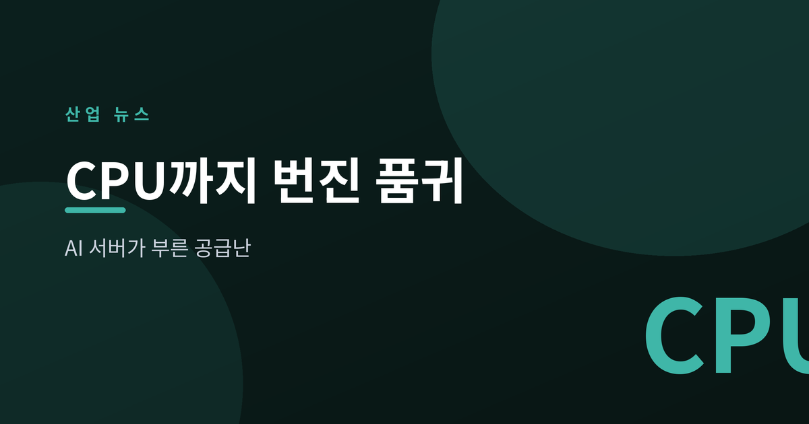
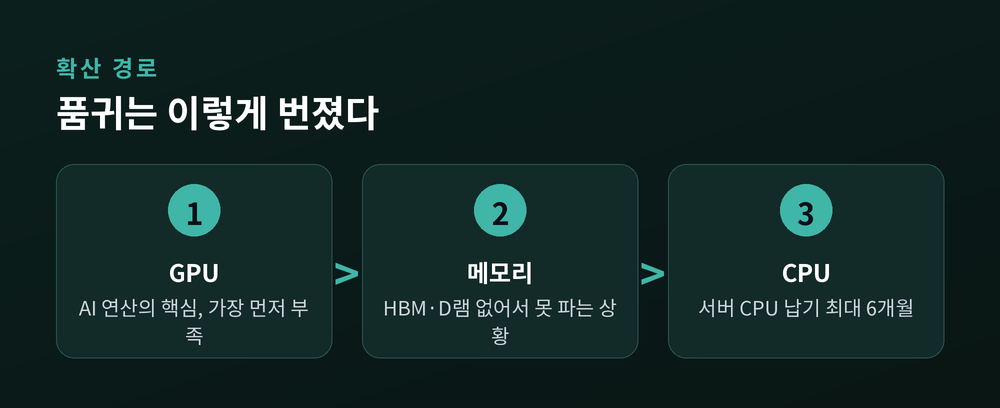
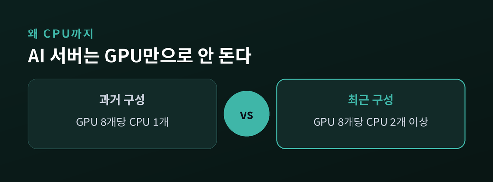
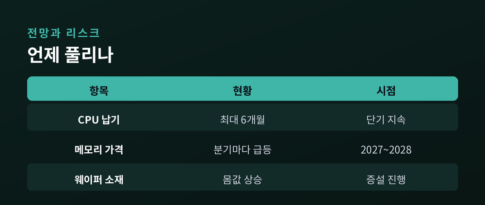

AI 서버가 부른 반도체 공급난

이번 글에서는 메모리에 이어 서버용 CPU까지 번진 반도체 공급난을 정리해 보겠습니다. 무엇이 부족한지, 왜 이것이 산업 전체의 문제인지, 앞으로 어떻게 흘러갈지 차분히 짚어보겠습니다.
한동안 뉴스의 주인공은 메모리였습니다. HBM과 D램이 없어서 못 판다는 이야기가 이어졌습니다.
그런데 최근 품귀 대상이 CPU로 넓어졌습니다. AI 서버 주문이 몰리면서 서버용 CPU 납기가 길어지고 있습니다.
국내외 보도를 종합하면, 인텔은 일부 제온 CPU 공급에 최대 6개월이 걸릴 수 있다고 고객에 알렸습니다. AMD도 일부 서버 CPU 납기가 8~10주로 늘었다고 전해집니다. 해외에서는 리드타임이 16주를 넘겼다는 이야기도 나옵니다. (더퍼블릭, 글로벌이코노믹, PBXScience)
수요의 성격도 달라졌습니다. 예전에는 AI가 주로 '학습'에 쓰였습니다. 지금은 스스로 일을 수행하는 에이전트형 AI로 무게가 옮겨가고 있습니다. 이런 작업은 GPU만이 아니라 일반 연산을 맡는 CPU를 더 많이 요구합니다.
예전엔 인텔과 AMD가 서로의 몫을 두고 다퉜습니다. 지금은 두 회사가 나란히 물량을 못 대는 '이중 호황'이라는 표현까지 나옵니다.

AI 서버는 GPU만으로 돌아가지 않습니다. GPU가 계산을 맡는다면, CPU는 그 계산을 지휘하고 데이터를 나릅니다.
그래서 GPU를 늘리면 CPU도 함께 늘어야 합니다. 과거 GPU 여덟 개당 CPU 한 개면 충분하던 구성이, 최근에는 CPU 두 개 이상으로 바뀌고 있습니다. (이코노미트리뷴)
공급 쪽은 오히려 빠듯합니다. 인텔은 자체 공정의 수율 문제를, AMD는 위탁생산사가 GPU를 먼저 만드느라 CPU 여력이 줄어드는 문제를 안고 있습니다.
병목은 한 곳에 머물지 않습니다. GPU에서 메모리로, 다시 CPU로 옮겨붙었습니다. 시장조사기관 TrendForce에 따르면 D램 계약가격은 올해 들어 분기마다 두 자릿수 넘게 뛰었습니다. CPU 가격도 15%가량 오를 조짐이라는 관측이 있습니다. (TrendForce, Astute Group)
값이 오르면 서버를 넘어 PC나 게임기 같은 소비자 제품 가격까지 밀려 올라갑니다. 데이터센터의 부족이 결국 우리 책상 위의 기기 가격표로 돌아오는 셈입니다.

가장 확실한 대응은 증설입니다. 반도체를 더 만들면 됩니다.
문제는 속도입니다. 공장 한 곳을 짓는 데 수년이 걸립니다. 수요가 뛰는 속도를 공급이 따라잡기 어렵습니다. 인텔 경영진조차 완화 시점을 2028년께로 내다봤습니다. (CNBC)
부족은 위로만 번지지 않고 아래로도 내려갑니다. 칩의 바탕이 되는 12인치 실리콘 웨이퍼까지 몸값이 오르고 있습니다. 세계 3위 웨이퍼 업체 SK실트론의 전략적 가치가 부각되며, 그룹 차원의 매각 논의가 막판에 다시 신중해졌다는 보도도 있습니다. (머니투데이, 서울경제)
물론 반대 리스크도 있습니다. 지금의 투자 열기가 과했다고 판명되면, 언젠가 재고와 가격이 반대로 꺾일 수 있습니다. 반도체는 늘 호황과 불황을 오가는 산업이기 때문입니다.
그래서 지금 필요한 것은 흥분이 아니라 관찰입니다. 어디가 진짜 병목이고, 그것이 언제 풀릴지를 차분히 지켜보는 편이 낫습니다.

이 글은 특정 기업이나 종목에 대한 투자 권유가 아닙니다. 판단과 책임은 본인에게 있습니다.
정리하면 이렇습니다. AI라는 수요가 GPU, 메모리, CPU, 그리고 웨이퍼까지 차례로 훑고 지나가고 있습니다.
— 진짜 병목은 특정 부품이 아니라, 그 모든 것을 한꺼번에 원하는 속도입니다.
부족이 어디서 멈출지 아직 아무도 모른다면, 우리는 지금 그 답을 지켜보는 중일지도 모릅니다.